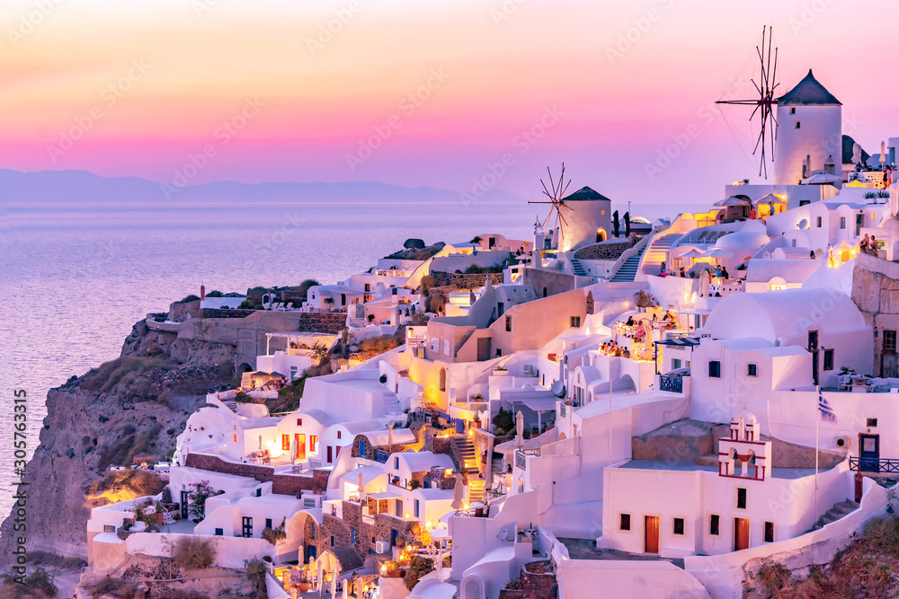
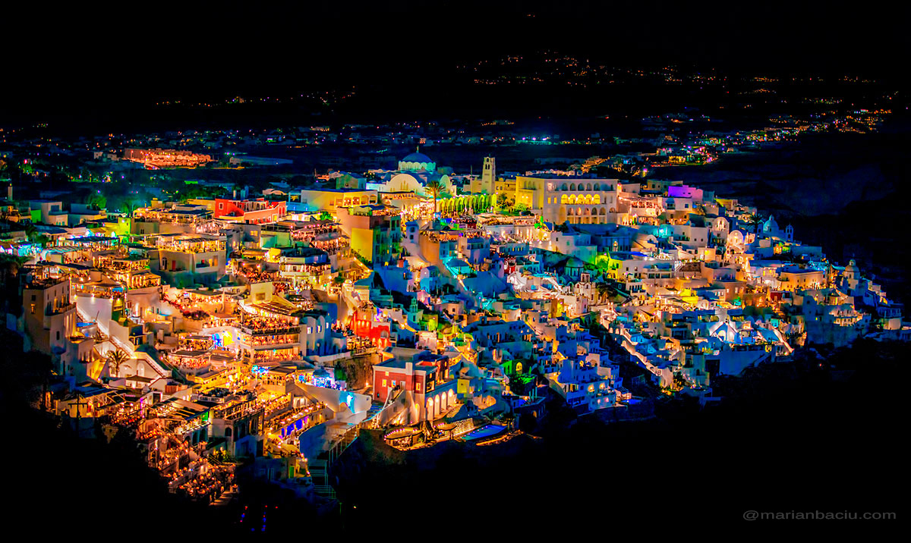
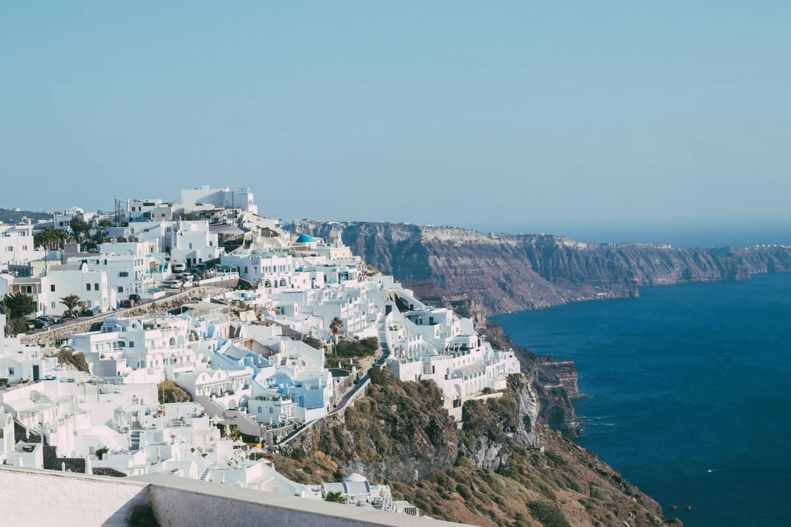
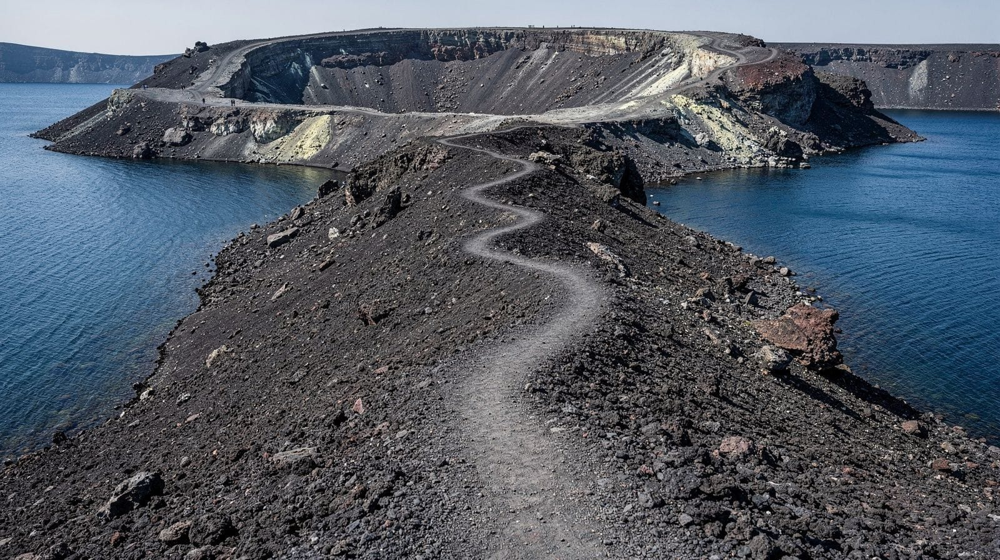

Faça Scroll down
A imagem de fundo fica fixa enquanto o conteúdo se move. Este é o efeito parallax.








Vídeo promocional da região.
Entre o azul do céu e o mar sem fim.
Erguem-se as casas brancas do jardim.
A imagem de fundo fica fixa enquanto o conteúdo se move. Este é o efeito parallax.
Os elementos paralax devem ter uma altura definida. E ter em background uma imagem que deve estar fixa